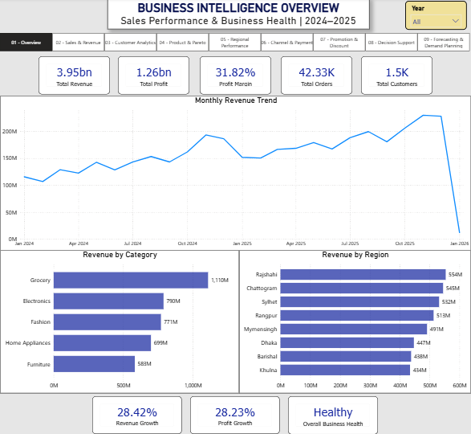
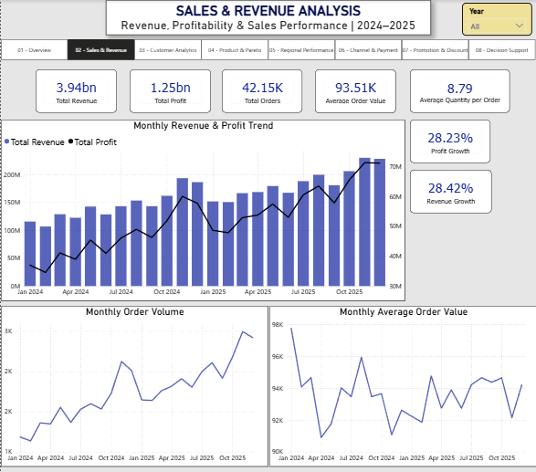
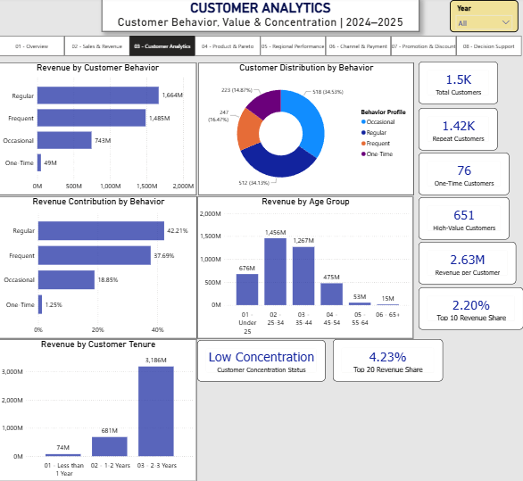
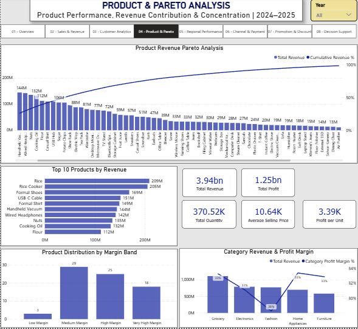
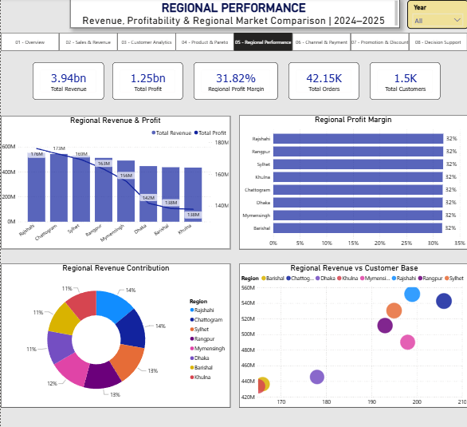
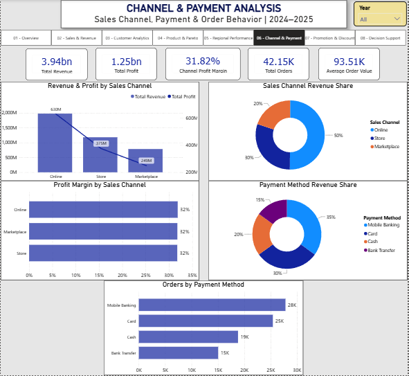
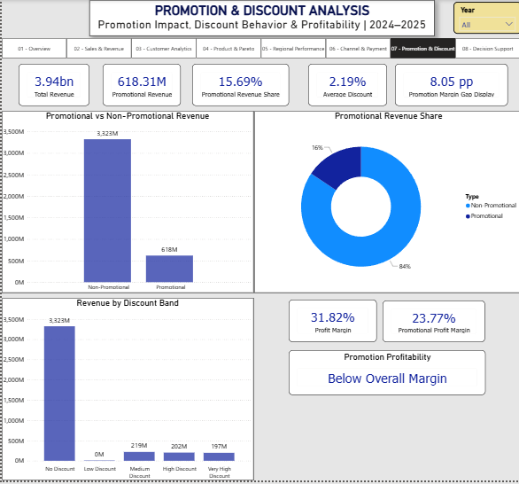
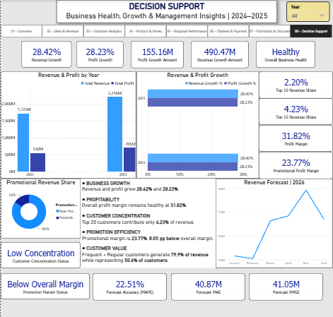

01 — Executive Overview
A consolidated view of revenue, profit, profit margin, orders, customers, monthly trends, category performance, and regional revenue.
View full-size image →An end-to-end analytics platform combining data quality checks, business performance analysis, sales forecasting, Power BI reporting, and scheduled analytics through GitHub Actions.
The project analyzes historical sales, customers, products, regions, profitability, and purchasing behavior to support evidence-based business decisions.
Dataset covering January 2024–December 2025.
A multi-page business reporting experience.
Seasonal-naive benchmark evaluated for January–June 2026.
GitHub Actions validates data and generates analytics outputs.
Browse the report pages covering executive performance, revenue, customer behavior, and other business analysis areas. Select any thumbnail to open its full-size screenshot.

A consolidated view of revenue, profit, profit margin, orders, customers, monthly trends, category performance, and regional revenue.
View full-size image →
Analyze monthly revenue and profit trends, order volume, average order value, average quantity per order, and revenue and profit growth.
View full-size image →
Explore customer behavior segments, repeat and one-time customers, revenue contribution by behavior, revenue across age groups, customer tenure, and concentration indicators.
View full-size image →
Explore product revenue rankings, cumulative revenue contribution, top-selling products, product margin bands, and category profitability.
View full-size image →
Compare regional revenue, profit, profit margins, revenue contribution, and customer-base relationships.
View full-size image →
Analyze revenue and profit by sales channel, channel profit margins, payment-method revenue share, and order volume by payment method.
View full-size image →
Evaluate promotional revenue, promotional share, discount bands, average discount, and promotional profitability relative to the overall margin.
View full-size image →
Bring together business growth, profitability, customer concentration, promotion efficiency, and forecast evaluation to support decisions.
View full-size image →Examine revenue, profit, orders, monthly trends, regional results, product performance, and sales channels.
Explore purchasing behavior, customer summaries, product popularity, and differences across business segments.
Compare forecasted and actual outcomes using MAE, RMSE, and MAPE. The seasonal-naive model provides a benchmark for further improvement.
The workflow combines source-data validation, analytics generation, forecasting outputs, and downloadable run artifacts.
Check source data, keys, relationships, dates, and financial calculations.
Generate business summaries, visualizations, and forecast outputs.
Upload analytics outputs from successful GitHub Actions runs.
Review the project structure, implementation, and setup instructions.
Open GitHub repository →Inspect workflow runs and download generated analytics artifacts.
View GitHub Actions →